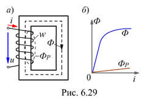
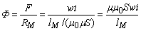
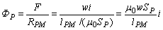

6.4.1.1. Магнитный поток при синусоидальном напряжении
Важнейшей частью всякой цепи переменного тока с ферромагнитными элементами являются обмотки, расположенные на ферромагнитном магнитопроводе. Конструкции магнитопроводов современных устройств переменного тока (трансформаторов, машин переменного тока, реле и др.) весьма разнообразны. Наиболее простой пример магнитной цепи переменного тока – это катушка со стальным сердечником (катушка со сталью).
При подключении катушки с числом витков w, размещённой на ферромагнитном магнитопроводе (рис. 6.29, а), к источнику переменного напряжения u в ней протекает ток i, а МДС F = wi катушки возбуждает магнитный поток, который удобно представить в виде двух составляющих:
а) основного потока Ф, замыкающегося по ферромагнитному сердечнику и нелинейно зависимого от тока i (рис. 6.29, б), т. к.
, где m = f(Ф);
б) магнитного потока рассеяния ФР, замыкающегося в основном по воздуху вокруг витков w катушки и пропорционального току i, т. к.
,
где lРM и SР - средняя длина м. c. л. и сечение магнитного потока рассеяния соответственно .
Обычно поток ФР составляет всего несколько процентов от потока Ф. Однако могут быть и такие режимы, в которых поток ФР оказывается соизмеримым с потоком Ф. Такие режимы имеют место, если магнитопровод работает при большом насыщении или когда в магнитопроводе имеется относительно большой воздушный зазор.